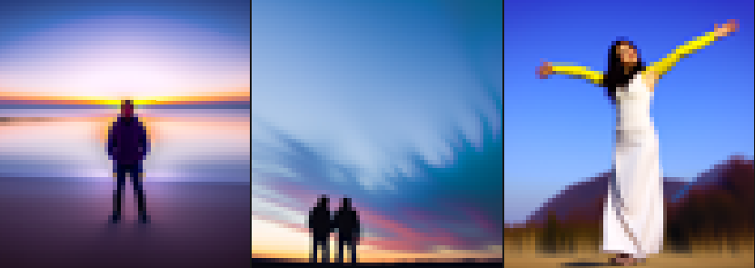
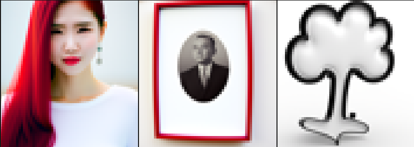
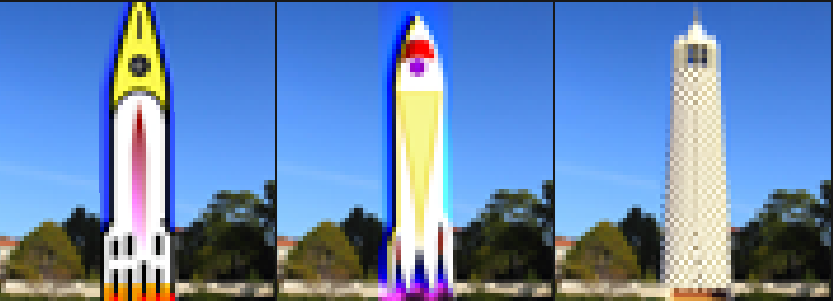
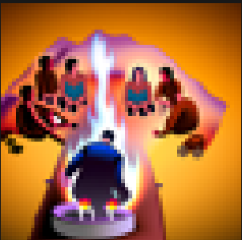

Using a Diffusion Model to Generate Images
0: Sampling
Here are some samples generated by the DeepFloyd IF model, along with the captions used to generate them. NOTE: In this project, all images were generated with random seed 1725. (These three images may have been generated with seed 181. Sorry!) Caption: an oil painting of a snowy mountain village Caption: a man wearing a hat Caption: a rocket ship1: Adding Noise
In this step we add increasing levels of noise to an image of the Berkeley Campanile, and parameterize the noise level with an integer ranging from 0 to 1000, following the original paper. We'll see later what the model is able to do about this. Noise level 0: Noise level 250: Noise level 500: Noise level 750: A noise level of 1000 corresponds to a completely random image, where the pixel values are sampled from a Gaussian.2. Classical Denoising
Here's an attempt at denoising using a Gaussian filter, the way we learned to for project 2: Noise level 250:3. Denoising with a Diffusion Model (in one step)
Here we use a diffusion model to predict the noise, which effectively allows us to predict the original image. The original image is found on the right. Noise level 250:4. Denoising with a Diffusion Model (in multiple steps)
Here we instead take advantage of the time-conditioning input to diffusion models, which allows us to iteratively denoise the image. This is a lot more computationally expensive, but the result looks nicer because there is more compute around to recreate nice features. Here are some of the intermediate results, followed by the final reconstruction:5. Sampling With a Diffusion Model
Given that the model removes noise from an image, what happens if we feed in an image of pure noise? (Well, we can generate a new image from scratch.) This particular model actually also has a text-conditioning feature, which allows us to input a prompt to condition the generation on. For these generations, we gave the generic prompt "a high quality image".6. Classifier-Free Guidance
The text conditioning affects the noise estimate output by the model. If we compare this estimate to the estimate from a baseline text prompt (literally "", the empty string), we get a measure of what the text conditioning does. If we simply increase the weight of the text conditioning, we can increase its effect, and improve the quality of the image. Here is the same process as the above, but with the text conditioning weight increased by a factor of 5:7.Image-to-Image Translation
In section 4 above, we saw that when we added noise to an image, when the model denoised it, we got a slightly different image than the original. We can do this intentionally to create images of varying degrees of similarity to a given image, for fun. Here we do this with the picture of the Campanile again. On a sort of scale from 1-33 in degree of similarity to the original, here are images of similarity 1, 3, 5, 7, 10, and 20:



Here's a cat I edited to look like a dog.

8. Visual Anagrams
We can pull all sorts of tricks with the steering of the generation. In this section, in each iteration of the denoising, we reconstruct the image according to one prompt, then we denoise the image upside down according to another prompt. When this works, the result is one of those fun illusions where the image looks like something right side up, but something else upside down. This is an old man right side up, but people around a campfire upside down: This is a skull right side up, but a hipster barista upside down: This is a pair of cabins in a snowy village right side up, but a pair of dogs upside down:9. Hybrid Images
Likewise since we generate the images by having the model predict the noise, we can manipulate the noise with high/low pass filters to create images which have (sort of) been steered according to different prompts for different frequencies. Here is something that is a waterfall close up, but a skull from a distance: Here is something which is a bunch of people surrounding a fire close up, but a dog from a distance:  Here is something which is a rocket ship close up, but a pencil from a distance: (I really like this one, because the way of fitting the constraints of both prompts is a little clever: the body of the pencil is the exhaust of the ship, and the ship is just the graphite.) This effect isn't always as simple as our interpretation. For example, whether at low or high pass,
it's not very easy to make a dog look like a man with this number of pixels, and the opposing prompts
don't do any "planning" to jointly fit the constraints.
So any attempt to get "a dog close up, but a man from a distance" creates these cursed dog-men.
This concludes the messing around with the model.
This effect isn't always as simple as our interpretation. For example, whether at low or high pass,
it's not very easy to make a dog look like a man with this number of pixels, and the opposing prompts
don't do any "planning" to jointly fit the constraints.
So any attempt to get "a dog close up, but a man from a distance" creates these cursed dog-men.
This concludes the messing around with the model.